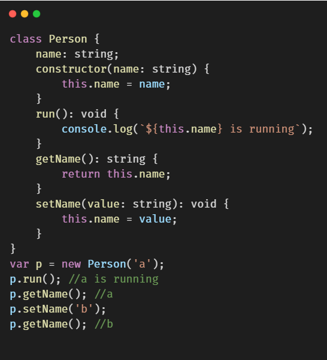
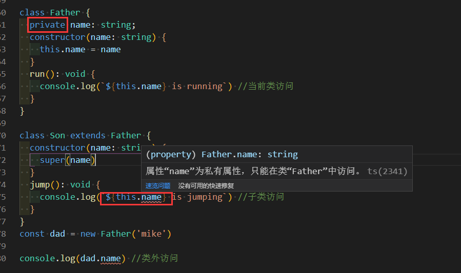
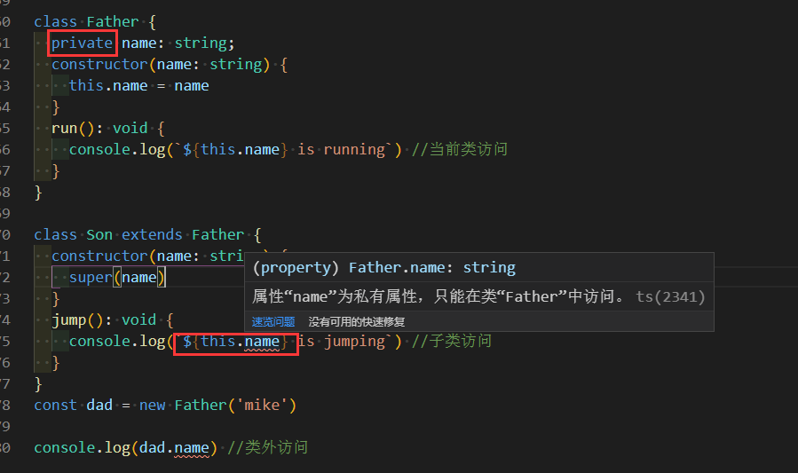

类
类的声明

继承
ts中，主要是通过extends和super来实现继承的。若父类和子类中有相同的方法，则子类实例化的时候，先在子类自身上找，没有的话，再去父类上找
super的主要作用是，在子类的构造器中，把this指向子类

类中的修饰符
1 public：公有属性。属性如果不加修饰符，默认为public。在当前类，子类，类外面都可以访问
 2 protected：保护类型。在当前类，子类可以访问，类外部不可以访问
2 protected：保护类型。在当前类，子类可以访问，类外部不可以访问
 3 private：私有属性，只能当前类访问，类外和子类不可访问

3 private：私有属性，只能当前类访问，类外和子类不可访问
